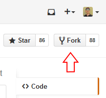

Submitting a pull request
The THREDDS source code is hosted on GitHub and we use its pull request feature to accept external contributions. Follow these steps to submit a pull request to Unidata:
-
Fork the THREDDS repository.
-
Click the "Fork" button at the upper-right corner of the THREDDS GitHub page. This will create a copy of the repository under your GitHub account.
-

-
-
Clone your fork to your local computer.
-
git clone https://github.com/<github_user_name>/thredds.git
-
-
Change into the
threddsdirectory.-
cd thredds
-
-
Create a branch for the changes that you will make based on
master.-
git checkout -b <branch_name> master -
For instance:
git checkout -b fix_radar_iosp master
-
-
Make changes to the source code. See this tutorial for help building THREDDS.
-
Push your changes to GitHub.
-
git push -u origin <branch_name>
-
-
Go to your forked THREDDS repository on GitHub (it’ll be something like
https://github.com/<github_user_name>/thredds) and select the<branch_name>branch from the drop-down box at the top left. -
-
Click the link that says "Pull Request", review the changes, and click the green "Create pull request" button.
-
-
Unidata will be notified of your request, and will be able to review the changes and discuss them with you before merging.


For more info, see GitHub’s Creating a pull request article.